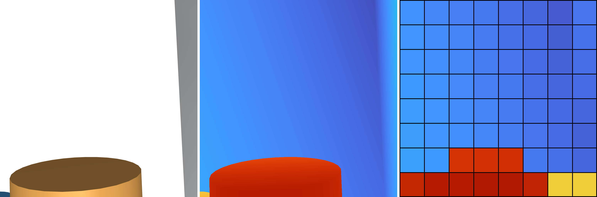
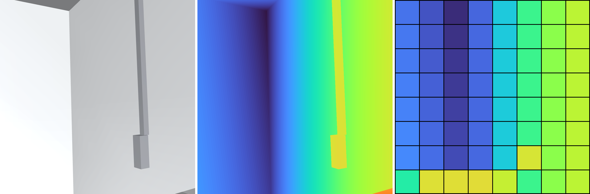
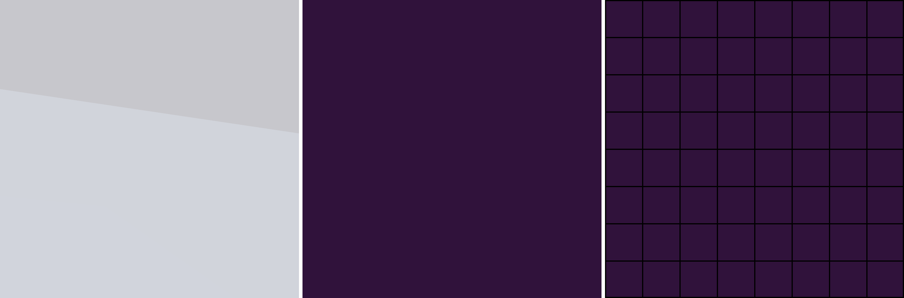
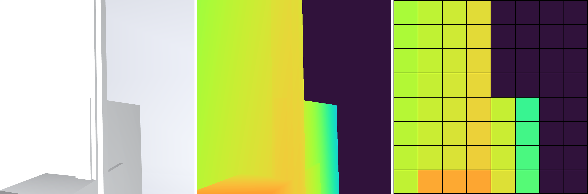
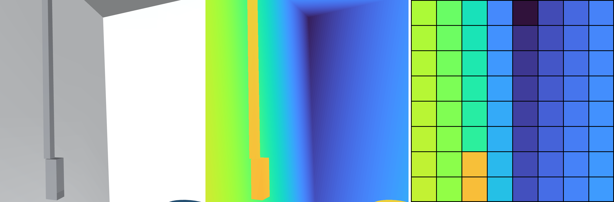
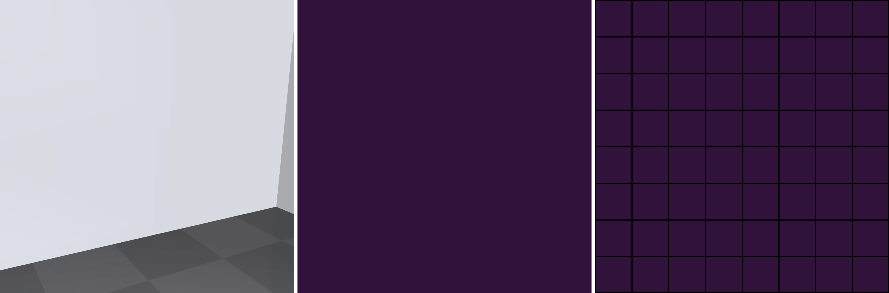

Frame 0, same scene as the table-camera pair. Left: RGB diagnostic render. Middle: dense depth diagnostic render. Right: recorded 8×8 sensor data. Display scale: 0.05–1.0 m, near red and far blue. PNGs contain no labels.





